無料
MIT ライセンスのオープンソース。
キーボードでブラウジング
Noctivagous Software の Chrome 拡張機能
マウスで狙う。
キーボードで実行する。
ウェブをより速く移動する方法。
中核のジェスチャー
マウスで狙う。キーでクリックする。


KeyPilot を使う感覚
KeyPilot のミニチュアデモを、二つのキー操作で用意しました。リンクにカーソルを合わせ、F で開きます。D で戻ります。
このデモはデスクトップ向けです。マウスとキーボードを一緒に使います。
ウォーターフロントニュース
港湾新聞
 今週末、港の灯りが戻る
埠頭の夜歩きが再開
本紙について
今週末、港の灯りが戻る
埠頭の夜歩きが再開
本紙について
作業員は第4埠頭の最後の照明を取り付け、2年にわたる修復を終えました。
日没後の散策が再開します。市場の店は1時間長く開きます。
読む：埠頭の夜歩きが再開
日没後も遊歩道が開き、第4埠頭の照明が増えました。
ウォーターフロントの店は忙しい秋の週末を見込んでいます。
港湾新聞は1884年から中部海岸とペノブスコット湾を伝えています。
この小さな新聞は、KeyPilot の F と D を試すためのものです。
キーボード
KeyPilot にはキー操作のフルレイアウトがあります。下は、使いながら開いておけるキーボードリファレンスウィンドウの再現です。キーにカーソルを合わせると、既定のブラウジングレイアウトでの働きがわかります。
ページ上で


バイモーダル制御
ギターという楽器のあり方を考えてみてください。両手には別々の役割があります。
この二つの動きは互いに依存しています。音を鳴らすには、左手が先に整えておく必要があります。左手は右手が弾くことに頼っており、そうでなければ音は出ません。

Noctivagous は、デスクトップソフトのマウス操作も同じ原則を目指すべきだと説明します。いまのマウスの使い方は、1）ステアリング（カーソルを動かす）と 2）機能の発動（クリック）を一つの装置・一つの場所にまとめ、そのすべてを片手に負わせるため、利用者の認知負荷が大きすぎます。
これらの役割をはっきり分け、両手を使う二つの入力位置にすると、ソフトへの制御は増します。たとえばトラックパッドはこれまでどおりカーソルを動かし、「クリック」は別の場所で、初めてもう一方の手が担います。まったく異なるソフトのダイナミクスが生まれます。上のデモがその一例です。開発者にとっては、UI 理論の可能性が開きます。
重要なのは、1968 年にマウスを考案したのはダグラス・エンゲルバートただ一人であり、それ以来ほとんど変わっていないことです。当時のパソコンには進歩でしたが、何十年も経ったいま、多くの場面でコンピュータ作業を退屈で疲れさせる方法になっています。タッチ画面のタブレットがそれを不要にしたわけではありません。ひとつには、画面上の対象を真正面から触る操作は精密ではないからです。コンピュータとの二つの操作スタイルには改善の余地が大きく、どちらもバイモーダル制御 / Dual-Input 理論の恩恵を受けられます。
この拡張機能は、私たちがバイモーダル制御と呼ぶ UI 理論を広めるためのものです。これまでどおりマウスでカーソルを動かし、起動はマウスボタンではなくキーボードのキーで行います。リンクにカーソルを合わせ、F でクリック、G で新しいバックグラウンドタブに開きます。速いです。これをキークリックと呼びます。
F 以外にも多くのキー操作があります。KeyPilot の力がそこから生まれます。キークリック機能が並ぶキーボードレイアウトを、内蔵の Layout Config エディタでカスタマイズできます。無料で、MIT ライセンスです。
このページのキークリックアニメーションは、そのジェスチャーを示します。マウスで狙い、F で開き、D で戻ります。
KEYPILOT を選ぶ理由
MIT ライセンスのオープンソース。
パワーユーザー向けのキーボードレイアウト。
拡張機能はその場でインストールできます。